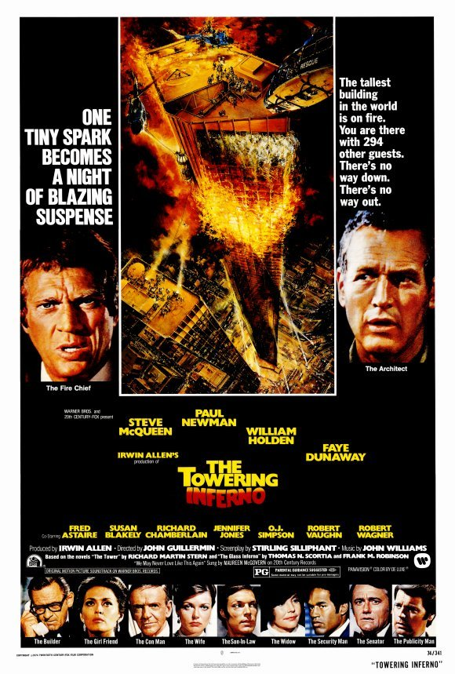

The Towering Inferno
47th Academy Awards
(Oscars 1975)
8 Nominations, 3 Awards
| Nominations | ||
|---|---|---|
| Category | Nominees | Result |
| Best Picture | Irwin Allen | Nominated |
| Actor in a Supporting Role | Fred Astaire | Nominated |
| Cinematography | Fred Koenekamp and Joseph Biroc | Won |
| Film Editing | Carl Kress and Harold F. Kress | Won |
| Art Direction | Raphael Bretton, Ward Preston, and William Creber | Nominated |
| Sound | Herman Lewis and Theodore Soderberg | Nominated |
| Music (Original Dramatic Score) | John Williams | Nominated |
| Music (Song) "We May Never Love Like This Again" |
Al Kasha and Joel Hirschhorn | Won |